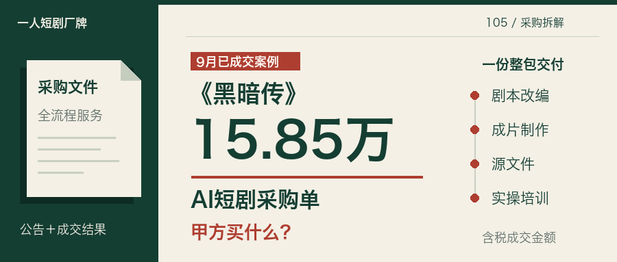
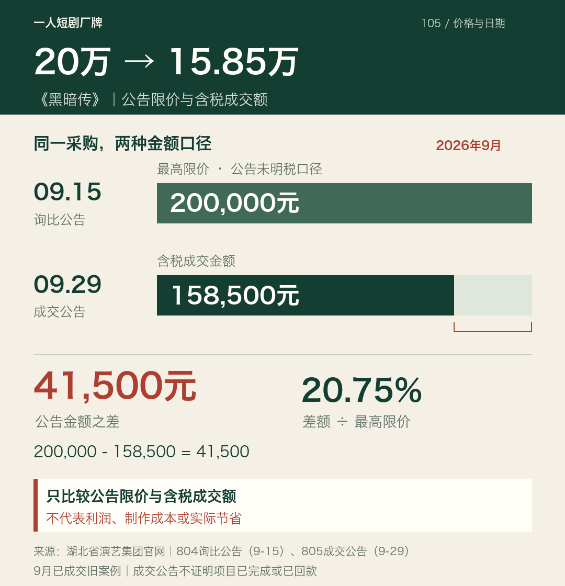
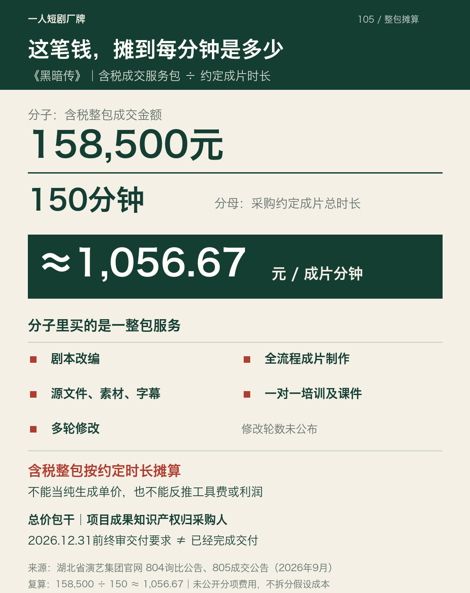

已发表 · 2026-11-15 20:40 · 阅读正式文章 · 9月已成交案例

《黑暗传》15.85万成交，甲方买什么
2026年9月15日，湖北省演艺集团官网发布《黑暗传》AI仿真人微短剧采购公告：改编汉民族创世史诗，制作150分钟成片，最高限价20万元。买方湖北微观视界文化传媒有限公司，还把培训和源文件写进了采购范围。
9月29日，官网公布灵境万维（武汉）智能科技有限责任公司以含税15.85万元成交。按公告金额复算，比最高限价少4.15万元，低20.75%；限价正文未另明税口径，这只是公告数字的对照。

把15.85万元除以约定的150分钟，约为1056.67元/成片分钟。这是整个含税服务包按成片时长摊算，包括剧本改编、全流程制作、配乐音效、剪辑精修、多轮修改，也包括交接工作。
交接要给完整工程源文件、素材和字幕；培训要结合本项目一对一实操，配套课件、教程和模板，让买方团队能独立制作后续同类内容。只用生成积分去估这份报价，会漏掉这些工时。

公告要求12月31日前完成全部内容终审交付，采用总价包干，项目成果知识产权归买方。修改写的是“多轮”，没有公布具体轮数。供应商须为具独立法人资格的相关企业，商务条款禁止转包、分包。
准备接类似项目，可以拿一份待发报价，花10分钟补一张交付清单：源文件、培训和修改服务，分别标明已计价、另报价或待协商；再写清修改轮数、成果权属、验收标准和付款节点。做完应能看出，总价覆盖到哪一步，还有哪些工作没谈清。
这是9月已成交案例，不是当前招募。成交额不等于实收或利润；两份公告正文未公开付款安排、实际成本及验收结果，摊算金额也不能作为行业通用单价。